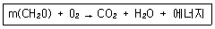
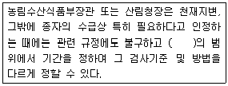

종자기사 (2011-06-12 기출문제)
1과목: 종자생산학
1. 종자처리 중 건열처리에 대한 설명으로 옳은 것은?
- 볍씨나 콩과작물 종자에 대하여 도열병 및 깜부기병 방제를 위한 처리 방법이다.
- 건열처리는 온도를 단계적으로 상승하여 70~75℃ 정도의 고온에 3일 정도 처리한다.
- 종자의 건조가 완벽하지 않아도 건열처리 시 건조되므로 종자품질에 영향이 거의 없다.
- 건명처리 하여도 종자의 활력과 발아세에는 전혀 영향이 없고 저장성이 증가한다.
(정답률: 50%)

2. 춘화처리(vernalization)를 실시하는 이유는?
- 휴면타파
- 발아촉진
- 생장억제
- 화성유도
(정답률: 76%)
3. 종자의 발아를 억제시키는 물질은?
- gibberellin
- cytokinin
- abscisic acid(ABA)
- auxin
(정답률: 88%)
4. 식물의 암 배우자, 수 배우자를 순서대로 옳게 나타낸 것은?
- 주피, 대포자
- 배낭, 화분립
- 소포자, 주심
- 반족세포, 꽃밥
(정답률: 86%)
5. 단자엽식물이나 발아시 1개의 배자엽(胚子葉)이 나타나는 식물에서 화아분화개시가 일어나는 부위는?
- 측아
- 정아
- 액아
- 원표피(原表皮)
(정답률: 38%)
6. 콩은 생태형이 뚜렷이 분화된 작물이므로 채종지의 온도와 일장에 따른 후작용이 나타난다. 다음 중 후작용에 해당하는 현상은?
- 콩에 단일처리를 하였더니 생육기간이 짧아졌다.
- 서늘한 온도조건에서 등숙한 콩은 단백질함량이 높다.
- 고온조건에서 채종한 콩 종자는 병원균이 대량으로 감염되어 곧 발아력을 상실한다.
- 장일조건에서 채종한 콩 종자는 다음 대에 개화기가 빨라진다.
(정답률: 50%)
7. 종자의 테트라졸리움 검사의 목적은?
- 발아검사를 위하여
- 활력검사를 위하여
- 병리검사를 위하여
- 유전적 순도 검정을 위하여
(정답률: 68%)
8. 옥수수 1대잡종(F1) 종자생산에는 세포질-유전자적 웅성불임성을 주로 이용한다. 양파에서 세포질적 웅성불임성을 이용하는 경우와 다른 점은?
- 웅성불임 유지친이 옥수수에서는 필요하지만 양파에서는 필요하지 않다.
- 옥수수나 양파 모두 화분친이 임성회복유전자를 가지고 있어야 한다.
- 옥수수의 화분친은 임성회복유전자를 필요로 하지만 양파는 임성회복유전자가 없어도 된다.
- 옥수수는 웅성불임 유지친이 없어도 되지만 양파는 웅성불임 유지친이 필요하다.
(정답률: 38%)
9. 양성화에서 가장 늦게 발달하는 기관은?
- 꽃잎
- 수술
- 암술
- 약편
(정답률: 67%)
10. 광발아종자에 해당하는 것은?
- 토마토
- 가지
- 상추
- 오이
(정답률: 83%)
11. 최근 웅성불임 유전자의 선발과 기능 분석 및 웅성불임 유전자마커의 개발이 활발하게 연구되고 있으나, 아직까지 1대잡종 채종에는 주로 자가불화합성을 이용하는 채소 작물은?
- 무
- 배추
- 고추
- 양파
(정답률: 71%)
12. 경실종자의 휴면타파에 가장 많이 이용하는 방법은?
- 암소저장
- 진공처리
- 종피파상
- 밀폐처리
(정답률: 93%)
13. 배추 육종이나 채종시 뇌수분을 실시하는 경우가 있는데 그 주된 이유는 무엇인가?
- 작업을 적기에 할수 있기 때문에
- 타 계통의 화분이 섞으는 것을 막기 위하여
- 수정율을 높이기 위하여
- 경비를 줄이기 위하여
(정답률: 62%)
14. 교배종 생산시 부계와 모계의 개화기를 일치시키는 방법이 될 수 있는 것은?
- 피대
- 적엽
- 관수
- 적심
(정답률: 70%)
15. 종자의 저장력이 높은 작물로만 나열된 것은?
- 벼, 콩, 땅콩
- 땅콩, 귀리, 양파
- 양파, 콩, 수수
- 수수, 귀리, 벼
(정답률: 67%)
16. 종자의 후숙(추숙)에 관한 설명으로 틀린 것은?
- 채종한 종자를 일정기간 양건하는 것을 말한다.
- 종과를 일정기간 음건하는 것을 말한다.
- 종자를 고르게 익히는데 효과적이다.
- 종자를 충실히 하고 휴면을 짧게 한다.
(정답률: 53%)
17. 무한화서를 가진 토마토, 수박, 당근 등은 개화기간이 길기 때문에 포기에서 수확한 종자도 착과 위치에 따라 종자의 품질이 다르다. 이런 농작물에서 우량한 품질의 종자생산을 위하여 실시할 수 있는 재배적 조치로만 나열된 것은?
- 환상박피, 경화, 적과
- 적과, 적심, 정지
- 정지, 적심, 순화
- 순화, 경화, 환상박피
(정답률: 66%)
18. 검사용 시료의 추출방법으로 틀린 것은?
- 여러 부위에서 조금씩 임의 추출
- 종자의 조제작업 중에 추출할 경우는 일정 시간의 간격을 두고 추출
- 저장 중의 종자는 저장방법이 가장 좋은 곳에 저장된 것 중에서 추출
- 종자 속에 들어있는 돌, 줄기, 잡초 종자, 상한 종자등이 제거되지 않게 추출
(정답률: 49%)
19. 종자의 저장에 대한 설명으로 틀린 것은?
- 잘 성숙한 종자를 수확해야 저장력이 높다.
- 장마철에 수확한 종자의 저장력은 떨어진다.
- 종자의 수분함량은 저장의 성패를 크게 좌우한다.
- 수분함량을 5~6%로 낮추어 수확·탈곡하는 것이 저장에 유리하다.
(정답률: 79%)
20. 종자전염병균을 배양한 후에 검사하는 가장 간단하고 보편적인 방법은?
- 종자세척액검사
- 한천배지검사
- 혈청반응검사
- 유묘병징조사
(정답률: 63%)
2과목: 식물육종학
21. 신품종 증식을 위한 채종재배시 지켜야 할 사항으로만 바르게 나열된 것은?
- 불량주 도태, 단일처리
- 단일처리, 우량모본의 양성
- 우량모본의 양성, 열성중성자 처리
- 불량주 도태, 우량모본의 양성
(정답률: 67%)
22. 육종에서 자가불화합성을 이용하여 새로운 품종을 육성하는 것이 많은 채소 작물에서 이용되고 있는데 다음 작물 중 이러한 방법이 이용되지 않은 것은?
- 양파
- 배추
- 무
- 양배추
(정답률: 82%)
23. 농작물의 내냉성 또는 내동성에 대한 설명으로 옳은 것은?
- 내냉성은 0℃ 이하의 저온에 대한 월동작물의 저항성이다.
- 내동성은 -20℃ 이하의 혹한에 대한 1년생 여름작물의 저항성이다.
- 내냉성은 0~15℃의 저온에 대한 여름작물의 저항성이다.
- 내동성은 0℃ 이상의 저온에 대한 월동작물의 저항성이다.
(정답률: 71%)
24. 독립유전하는 양성잡종, AaBb 유전자형의 개체를 자식시켰을 때 동형접합 개체의 비율은?
- 100%
- 50%
- 25%
- 12.5%
(정답률: 54%)
25. 근교약세(近交弱勢)에 대한 설명으로 옳은 것은?
- 세대의 경과에 따라 직선적으로 세력이 약해진다.
- 형질의 특성 및 세대에 구별 없이 세력이 약해진다.
- F2 세대 이후는 형질의 특성과 무관하게 같은 경향으로 세력이 약해진다.
- 관여하는 유전자 수가 적은 형질은 초기세대에서 급격히 약해지고, 수량형질 같이 관여하는 유전자가 많은 것은 후기세대에 가서 약해진다.
(정답률: 44%)
26. Agrobacterium을 이용한 형질전환법에서 유전자 운반체의 역할을 하는 것은?
- F plasmid
- Ti plasmid
- cosmid
- bacteriophage
(정답률: 69%)
27. 배우체형 자가불화합성에 대한 설명으로 옳은 것은?
- 암술대(화주)의 길이와 꽃밥의 높이(화사의 길이) 차이 때문에 발생하는 불화합성
- 화분(꽃가루)의 유전자와 암술대(화주)세포의 유전자형간 상호작용에 의하여 발생하는 불화합성
- 화분(꽃가루)이 형성된 개체 또는 체세포의 유전자형(2n)에 의하여 발생하는 불화합성
- 화분(꽃가루)의 유전자에 관계없이 암술대(화주) 세포의 세포질유전자에 의하여 발생하는 불화합성
(정답률: 52%)
28. cDNA 유전자 은행(cDNA library)을 구축 할 때 다음 중 가장 먼저 이루어져야할 사항은?
- 역전사효소에 의한 cDNA 합성
- cDNA 클론의 동정
- cDNA를 운반체(vector)에 삽입
- mRNA 추출
(정답률: 67%)
29. 교잡육종법의 교배모본 선정에 있어서 적합하지 않은 것은?
- 재래종은 교배모본으로서 우량 형질을 가지고 있다.
- 타지역에서 선발된 품종을 우선적으로 교배모본으로 정한다.
- 대상지역의 주요품종(leading variety)을 교배모본의 한쪽친으로 선정한다.
- 특성조사 성적을 교배친 선정에 활용한다.
(정답률: 66%)
30. 정부변이로 옳은 것은?
- 불연속변이
- 대립변이
- 아조변이
- 방황변이
(정답률: 43%)
31. 배추의 자가불화합성을 이용한 1대잡종품종 육성에 대한 설명으로 틀린 것은?
- 우리나라 배추의 최초 1대잡종품종은 원예 1호와 원예 2호 이다.
- 배추의 자가불화합성은 배우체형 자가불화합성이다.
- 배추의 자가불화합성 타파를 위해 이산화탄소를 처리한다.
- 배추의 교배친은 인위적으로 뇌수분을 하여 채종한다.
(정답률: 32%)
32. Vavilov의 “유전자 중심지설”이란 무엇을 기준으로 원산지를 추정하는 방법인가?
- 식물의 염색체
- 교잡의 친화성
- 식물의 변이성
- 식물의 면역성
(정답률: 56%)
33. 양적형질과 관련이 가장 적은 것은?
- 대립변이
- 연속변이
- 방황변이
- 개체변이
(정답률: 60%)
34. 두 가지 형질의 유전력을 계산한 결과 각각 0.2와 0.9가 나왔다. 이것의 육종적 의의를 바르게 나타낸 것은?
- 유전력 0.2의 형질은 0.9에 비하여 선발의 효과가 크다.
- 유전련 0.2의 형질은 질적형질이고, 0.9는 양적형질이다.
- 유전력 0.2의 형질은 0.9에 비하여 환경의 영향을 크게 받는다.
- 유전력 0.2의 형질은 유전자의 지배가가 상가적이고, 0.9는 유전자의 지배가가 상승적이다.
(정답률: 62%)
35. 품종의 퇴화 원인으로 가장 거리가 먼 것은?
- 돌연변이
- 기계적 혼입
- 자화수정
- 자연교잡
(정답률: 68%)
36. 한 유전자의 생성물이 여러 가지 형질에 관여하는 유전현상은?
- 다면발현
- 표현형모사
- 복원성
- 반응규격
(정답률: 85%)
37. 어떤 유전자자리의 대립유전자가 동협접합체인지 이형접합체인지를 알아 볼 수 있는 교배 방법은?
- 3원 교배
- 다계교배
- 검정교배
- 복교배
(정답률: 85%)
38. 순계설의 주요 내용에 해당하지 않는 것은?
- 순계분리법은 타가수정 작물에서는 순계가 이루어지지 않아서 적용될 수 없다.
- 완전한 순계 내에서는 선발의 효과가 없다.
- 순계설을 이용한 순계분리법은 주로 자가수정 작물에 대하여 행한다.
- 기본집단에는 유전자형을 달리한 많은 순계가 혼합되어 있다.
(정답률: 70%)
39. 20계통을 난괴법으로 4반복하여 생산성 검정시험을 할 때 오차의 자유도는?
- 57
- 60
- 76
- 80
(정답률: 22%)
40. 벼의 육종시 집단육종법으로 개량하는 것이 가장 유리한 형질은?
- 간장
- 벼의 찰성
- 꽃색
- 내염성
(정답률: 40%)
3과목: 재배원론
41. 식물에 대한 옥신의 기능이 아닌 것은?
- 발근 촉진
- 가지의 굴곡 유도
- 낙과 방지
- 개화 지연
(정답률: 77%)
42. 파종 후 토양 전면에 살포하는 제초제로만 나열된 것은?
- paraquat, glyposate, bialaphos
- butachlor, simazine, alachlor
- 2,4-D, bentazone, diquat
- 2,4-D, diquat, bensulfuron
(정답률: 47%)
43. 다음 중 종자의 수명이 가장 짧은 작물은?
- 클로버
- 앨펄퍼
- 메밀
- 토마토
(정답률: 41%)
44. 내습성이 가장 약한 작물로만 나열된 것은?
- 벼, 택사, 미나리
- 밭벼, 옥수수, 율무
- 감자, 고추, 메밀
- 당근, 양파, 파
(정답률: 80%)
45. 단위 면적당 작물의 수량을 최대로 올릴 수 있는 가장 이상적인 조건은?
- 유전성과 환경조건이 좋아야 한다.
- 유전성, 환경조건, 재배기술이 균형있게 형서오디어야 한다.
- 재배기술이 발달하고, 지대, 자본이 충분하여야 한다.
- 환경조건이 우수하고, 재배기술과 토지자본이 충족되어야 한다.
(정답률: 72%)
46. 냉해의 작용기구가 아닌 것은?
- 인산, 가리 등 양분의 흡수 저해
- 물질의 동화전류 저해
- 질소동화가 저해되어 암모니아의 축적 감소
- 원형질 유동의 감퇴
(정답률: 79%)
47. 다음 화학식은 식물에서 어떤 생리작용을 나타낸 것인가?

- 증산작용
- 동화작용
- 호흡작용
- 동화 및 호흡작용
(정답률: 61%)
48. 육묘의 필요성에 대한 설명으로 틀린 것은?
- 딸기, 고구마 등에서는 직파하면 이식하는 것보다 생육이 불리하다.
- 벼를 이앙하여 재배하면 맥류와 1년 2작이 가능하다.
- 육묘재배가 직파하는 것보다 종자량이 많이 든다.
- 봄 결구 배추를 보은 육묘해서 이식하면 추대현상을 방지할 수 있다.
(정답률: 72%)
49. 식물 잎의 노화와 낙엽을 촉진하는 물질은?
- ABA
- 2,4-D
- 지베렐린
- 옥신
(정답률: 69%)
50. 식물체 내의 수분퍼텐셜에 대한 설명으로 옳은 것은?
- 식물체의 수분퍼텐셜은 일반적으로 양(+)의 값이다.
- 삼투퍼텐셜과 압력퍼텐셜이 같으면 원형질분리가 일어난다.
- 수분퍼텐셔로가 삼투퍼텐셜이 같으면 팽만상태를 유지한다.
- 수분퍼텐셜과 삼투퍼텐셜에는 매트릭퍼텐셜은 거의 영향을 미치지 않는다.
(정답률: 35%)
51. 일장효과에 가장 효과적인 광은?
- 400nm 자색광
- 480nm 청색광
- 580nm 황색광
- 660nm 적색광
(정답률: 65%)
52. 유축농업(有畜農業) 또는 혼합농업과 비슷한 뜻이며, 식량과 사료를 서로 균형있게 생산하는 재배형식은?
- 식경
- 원경
- 소경
- 포경
(정답률: 63%)
53. 방목초지를 조성할 때 몇 가지 목초류 종자를 섞어서 뿌리는 혼파를 하게 되면 여러 가지 이점이 있는데, 다음 중에서 혼파의 이점과 거리가 먼 것은?
- 병충해 방제에 유리하다.
- 벼과 목초와 콩과 목초가 섞이게 되면 가축의 영양상 유리하다.
- 콩과 목초와 벼과 목초를 섞어 뿌리면 질소질 비료가 절약된다.
- 여러 종류의 목초가 함께 생육하면 생장의 소장(消長)이 각기 다르므로 혼파목야지의 산초량이 시기적으로 평준화 된다.
(정답률: 57%)
54. 딸기의 육묘재배시 어린모종(자묘) 생산 방법에 대한 설명으로 틀린 것은?
- 런너(runner) 발생을 촉진하려면 아주심기 후 빠른 활착과 적절한 비배관리를 통하여 새잎의 발생을 촉진시켜야 한다.
- 모주가 액아를 발생시켜 포기나누기를 하게 되면 다량의 런너가 발생하는 경우가 있는데 이러한 경우 우량한 어린모종을 다수 획득할 수 있다.
- 모주당 6~7개의 런너를 발생시키고 런너당 3포기의 어린모종을 유인하면 모주 한 개당 약 20여 포기를 확보할 수 있다.
- 턱잎(탁엽)에서 발생하는 런너는 생육이 저조하므로 제거한다.
(정답률: 31%)
55. 작부체계에 대한 설명으로 옳은 것은?
- 고추와 참외는 연작시 기지현상이 거의 없는 작물이다.
- 객토와 접목은 기지대책이 될 수 없다.
- 노포크(Nofolk)식 윤작은 사료생산에 초점이 맞추어진 윤작방식이다.
- 개량3포식 윤작은 포장의 1/3에 콩과작물을 심는 윤작방식이다.
(정답률: 73%)
56. 토양미생물의 여러 가지 활동 중에서 농작물에 해를 끼치는 활동은?
- 무기성분의 산화
- 유리질소의 고정
- 암모니아를 질산으로 변하게 하는 질산화 작용
- NO-를 환원하여 N20나 N2로 되게 하는 탈질작용
(정답률: 58%)
57. 식물체에서 옥신의 기능을 옳게 설명한 것은?
- 정아의 생장을 억제시켜 정아우세현상을 유발한다
- 햇빛을 받은 쪽의 옥신농도가 높아 줄기의 굴광현상을 유발한다.
- 잎에 옥신농도가 높으면 잎자루 기부에 이층이 형성된다.
- 세포벽의 기소성을 증대시켜 확대생장을 촉진한다.
(정답률: 30%)
58. 대기오염물질 중 빗물의 산도를 낮추지 않는 것은?
- 이산화질소
- 염화수소가스
- 아황산가스
- 수소가스
(정답률: 43%)
59. 침관수해를 입은 논에서 청고(靑枯)현상이 나타나는 조건은?
- 저수온, 정체수, 청수
- 고수온, 정체수, 탁수
- 저수온, 유동수, 탁수
- 고수온, 유동수, 청수
(정답률: 70%)
60. 벼의 생육단계에 따른 물 관리에서 관개심도를 가장 깊게 해야 하는 시기는?
- 이앙기~활착기
- 활착기~분얼성기
- 유수형성기~수잉기
- 유숙기~황숙기
(정답률: 27%)
4과목: 식물보호학
61. 오존(O3)에 의해 피해를 입은 식물체에 나타나는 증상이 아닌 것은?
- 황화
- 반점
- 얼룩
- 암종
(정답률: 60%)
62. 곤충의 동색성(homochromy)은?
- 먹이에 따라 색이 변하는 것이다.
- 보는 각도에 따라 색이 변하는 것이다.
- 암컷과 수컷이 같은 색을 띄는 것이다.
- 주위환경의 유력한 색과 같아지는 것이다.
(정답률: 73%)
63. 곤충의 형태에 대한 설명으로 틀린 것은?
- 몸은 머리, 가슴, 배의 3부분으로 구별된다.
- 가슴은 앞가슴, 가운데가슴, 뒷가슴의 3부분으로 구성된다.
- 3쌍의 다리는 앞으로부터 앞다리, 가운데다리, 뒷다리라 부른다.
- 각 다리는 4개의 마디로 되어있어 밑으로부터 밑마디, 도래마디, 종아리마디, 발목마디라 한다.
(정답률: 60%)
64. 해충의 방제와 관련하여 생물학적 방제효과에 대한 설명중 틀린 것은?
- 안축 및 해충천적에 대한 위험성이 없거나 매우 낮다.
- 치사율에 대한 저상성이 거의 없다.
- 방제효과가 속효적이고 일시적이다.
- 생물상의 평형과 생태계에 안정적이다.
(정답률: 87%)
65. 식물에서 한 개 또는 여러 개의 저항성 유전자에 의해 조절되는 진정저항성 중 수직저항성에 해당하지 않는 것은?
- 포장 저항성
- 레이스(race) 특이적 저항성
- 단인자 저항성
- 질적 저항성
(정답률: 54%)
66. 우리나라에 피해가 심한 세균병으로 포도나무, 사과나무, 배나무, 장미 등에 뿌리혹병(근두암종병)을 일으키는 병원 세균의 속명은?
- Agrobacterium
- Pseudomonas
- Corynebacterium
- Zanthomonas
(정답률: 68%)
67. 죽은 식물에 부생을 원칙으로 하나 살아있는 조직을 침해하여 병을 일으킬 수 있는 임의기생체는?
- 보리 흰가루병균
- 딸기 잿빛곰팡이병균
- 오이 노균병균
- 향나무 녹병균
(정답률: 47%)
68. 생물적 방제에 사용되는 천적은?
- 유기인계
- DDVP
- 기계유
- 기생벌
(정답률: 79%)
69. 벼 도열병은 품종에 따라 감염형(infetion type)이 다르게 나타난다. 벼 잎에 발생한 감염형이 강도이병성일 때 나타나는 병징의 형태로 옳은 것은?
- 병반이 방추형이며 약도이병성 보다 크다.
- 병반이 방추형이며 약도이병성 보다 작다.
- 병반이 크지 않고 버짐현상이 보인다.
- 갈점형의 병반이다.
(정답률: 54%)
70. 마름무늬매미충이 매개하는 병으로만 나열된 것은?
- 오동나무 빗자루병, 뽕나무 오갈병
- 벼 줄무늬잎마름병, 뽕나무 오갈병
- 대추나무 빗자루병, 붉나무 빗자루병
- 벼 오갈병, 감자 잎말림병
(정답률: 23%)
71. 암발아 잡초는?
- 바랭이
- 소리쟁이
- 냉이
- 쇠비름
(정답률: 58%)
72. 잡초의 철저한 방제가 요구되는 잡초경합한계기는?
- 작물 전생육기간 중 첫 1/3~1/2 기간인 생육초기
- 작물 전생육기간 중 1/2~2/3 기간
- 작물 전생육기간 중 생육 중기 이후
- 작물의 초관(canopy)형성 이후
(정답률: 64%)
73. 해충 방제법 중에서 재배적 방제법이 아닌 것은?(오류 신고가 접수된 문제입니다. 반드시 정답과 해설을 확인하시기 바랍니다.)
- 윤작과 혼작
- BT살포
- 재배 시기 조절
- 경운
(정답률: 83%)
74. 천적을 이용하여 해충을 방제하는 생물농약은?
- Bacillus thuringiensis
- 석회보르도액
- gibberellin
- 불임화제
(정답률: 62%)
75. 입제(granule)에 대한 설명으로 옳은 것은?
- 사용이 간편하다.
- 농약 값이 싸다.
- 환경오염성이 높다.
- 사용자에 대한 안전성이 낮다.
(정답률: 82%)
76. 해충 등 생물분류군의 범주 및 차례로 옳은 것은?
- 문 - 강 - 목 - 속 - 종 - 과
- 문 - 강 - 목 - 과 - 속 - 종
- 문 - 강 - 목 - 속 - 과 - 종
- 문 - 목 - 강 - 종 - 속 - 과
(정답률: 50%)
77. 잡초방제를 위한 예취 최적기는?
- 발아직후
- 결실기 이후
- 생육 후기
- 최대 전엽기와 개화시기 사이
(정답률: 54%)
78. ELISA의 기본 원리는?
- 항원항체반응
- 소화효소반응
- 산화환원반응
- 리가제반응
(정답률: 74%)
79. 잡초와 주요 영양번식 기관의 연결이 틀린 것은?
- 벋음씀바귀 - 포복경
- 가래 - 뿌리줄기
- 향부자 - 비늘줄기
- 올방개 - 덩이줄기
(정답률: 40%)
80. 농약살포방법 중 미스트 법(mist spraying)에 대한 설명으로 틀린 것은?(오류 신고가 접수된 문제입니다. 반드시 정답과 해설을 확인하시기 바랍니다.)
- 살포 시간, 노력과 자재 등을 절감한다.
- 살포액의 미립와로 목표물에 균일하게 부착시킨다.
- 살포액의 농도를 낮게 하고 많은 양을 살포한다.
- 분사 형식은 노즐에 압축공기를 같이 주입하는 유기분사(sir injection spray) 방식이다.
(정답률: 17%)
5과목: 종자관련법규
81. 보호품종의 종자를 육성자의 허락을 받지 않고 이용하여도 상관이 없는 경우는?
- 영리의 목적으로 텃밭에 종자를 생산하였다.
- 단백질 분석실험을 위하여 보호품종의 종자를 이용하였다.
- 포장실험을 위하여 종자를 이용하고 생산된 나머지 종자를 판매하였다.
- 종자를 구입한 농민이 다음해는 포장을 추가로 확보하여 심기 위해 종자를 보관하였다.
(정답률: 58%)
82. 다음 중 거짓표시의 금지 내용이 아닌 것은?
- 품종보호를 받지 아니하거나 품종보호 출원 중이 아닌 품종의 종자의 용기나 포장에 품종보호를 받았다고 표시하는 행위
- 품종보호 출원 중이 아닌 품종을 품종보호 출원 중인 품종인 것 같이 영업용으로 광고하는 행위
- 품종보호를 받지 않은 품종을 보호품종인 것 같이 거래서류 등에 표시하는 행위
- 품종명칭과 상표로 등록된 상표를 같이 표시하는 경우
(정답률: 71%)
83. 다음 중 농림수산식품부장관이 품종목록 등재를 취소하는 사유에 해당하지 않은 것은?
- 부정한 방법으로 등재된 것이 발견되었을 때
- 당해 품종의 등록된 품종명칭이 취소되었을 때
- 품종의 성능이 심사기준에 디달할 때
- 품종이 신규성이 없을 때
(정답률: 35%)
84. 다음 중 A와 B가 품종보호권을 공유한 경우에 관한 설명으로 맞는 것은?
- A는 B의 동의 없이 그 지분을 양도할 수 있다.
- A는 B의 동의 없이 그 지분을 목적으로 하는 질권을 설정할 수 있다.
- A는 B의 동의 없이 그 품종보호권에 대한 전용실시권을 설정할 수 있다.
- A는 특정한 약정이 없으면 B의 동의 없이 그 품종보호를 실시할 수 있다.
(정답률: 48%)
85. 종자산업법에서 규정한 종자관리사의 정의로 옳은 것은?
- 종자산업법에 의한 자격을 갖춘 자로서 국가나 종자업자가 생산한 종자를 보증하는 자
- 종자산업법에 의한 자격을 갖춘 자로서 종자업자가 생산하여 판매·수출 또는 수입하고자 하는 종자를 보증하는 자.
- 국가기술자격인 종자기사 시험에 합격한 자
- 국가기술자격인 종자산업기사 시험에 합격한 자로 품종보호권을 보유하고 있는 자.
(정답률: 42%)
86. 국가보증 또는 자체보증의 대상이 아닌 종자를 판매 또는 보급하고자 할 때 유통종자의 품질표시사항이 아닌 것은?
- 작물의 명칭
- 품종의 명칭
- 종자의 발아율
- 재배 시 특히 주의할 사항
(정답률: 34%)
87. 종자산업법에 의해 해당 품종의 진위성 및 해당 품종 종자의 품질이 보증된 채종 단계별 종자를 무엇이라 하는가?
- 보증종자
- 원원종
- 진위종자
- 보급종
(정답률: 53%)
88. 품종보호 출원 절차(무효, 서류제출 등)에 관한 설명 중 틀린 것은?
- 농림수산식품부장관은 보정명령을 받은 자가 지정된 기간까지 그 보정을 하지 아니한 경우에는 당해 절차를 무효할 수 있다.
- 우편물의 배달 지면, 분실 및 우편업무의 중단으로 인하여 발생한 서류 제출에 관한 사항은 농림수산식품부령으로 정한다.
- 우편으로 농립수산식품부장관에게 서류를 제출하는 경우에는 우편물이 도착한 다음 날에 농림수산식품부장관에게 제출한 것으로 본다.
- 농림수산식품부장관에게 제출된 서류는 농림수산식품부장관에게 도달된 날부터 그 효력이 발생한다.
(정답률: 68%)
89. 국가공무원인 A씨가 직무상 새로운 볍씨 “태백”이라는 신품종벼를 육성하였다. 품종보호를 받을 수 있는 A씨의 권리는 누가 승계하는가?
- A씨 자신
- 국가
- 전담조직
- A씨와 국가
(정답률: 67%)
90. 농림수산식품부장관이 정한 재정에 대한 대가 결정에 불복이 있는 자가 취할 조치로 맞는 것은?
- 법원에 민사소송을 제기
- 품종보호심판위원회에 심판청구
- 법원에 행정소송을 제기
- 농림수산식품부장관에게 재심청구
(정답률: 29%)
91. 종자관리요강의 수입적응성시험 심사기준 중 틀린 것은?
- 재배시험기간: 재배시험기간은 2작기 이상으로 하되 실시기관의 장이 필요하다고 인정하는 경우에는 재배시험기간을 단축 또는 연장할 수 있다.
- 재배시험지역: 노지의 재배시험지역은 최소한 1개 지역 이상으로 하되, 품종의 주 재배지역은 반드시 포함되어야 하며 작물의 생태형 또는 용도에 따라 지역 및 지대를 결정한다.
- 표준품종: 표준품종은 국내외 품종 중 널리 재배되고 있는 품종 1개 이상으로 한다.
- 평가형질: 평가대상 형질은 작물별로 품종의 목표형질을 필수형질과 추가형질을 정하여 평가하며, 신청서에 기재된 추가 사항이 있는 경우에는 이를 포함한다.
(정답률: 50%)
92. 종자보증기관이 아닌 것은?
- 국립농산물품질관리원장
- 국립원예특작과학원
- 국제종자검정협회
- 국제종자검정가협회
(정답률: 53%)
93. 다음 중 품종보호에 관한 심판 설명으로 틀린 것은?
- 품종보호심판은 품종보호심판위원회가 1심의 역할을 한다.
- 품종보호에 관한 이해관계인이나 심사관은 무권리자에 대하여 품종보호를 한 경우에는 무효심판을 청구할 수 있다.
- 심판위원은 직무상 독립하여 심판하고, 심판위원의 자격은 대통령령으로 정한다.
- 품종보호 심판위원회는 상임위원만으로 구성된다.
(정답률: 62%)
94. 품종보호권 또는 전용실시권을 침해한 자에 대한 벌칙기준으로 맞는 것은?(관련 규정 개정전 문제로 여기서는 기존 정답인 4번을 누르면 정답 처리됩니다. 자세한 내용은 해설을 참고하세요.)
- 2년 이하의 징역 또는 500만원 이하의 벌금
- 3년 이하의 징역 또는 2천만원 이하의 벌금
- 5년 이하의 징역 또는 1천만원 이하의 벌금
- 5년 이하의 징역 또는 3천만원 이하의 벌금
(정답률: 36%)
95. 다음 중 품종명칭등록을 받을 수 있는 품종명칭?(오류 신고가 접수된 문제입니다. 반드시 정답과 해설을 확인하시기 바랍니다.)
- 숫자 또는 기호로만 표시한 품종 명칭
- 성적인 표현으로 불쾌감을 유발하거나, 장애인 등을 비하하는 품종명칭
- 품종명칭의 등록출원일보다 늦게 상표법에 의한 등록출원 중에 있는 상표와 동일 또는 유사하여 오인 또는 혼동할 우려가 있는 품종명칭
- 해당 품종의 원산지를 오인하거나 혼동할 염려가 있는 품종명칭
(정답률: 44%)
96. 다음 중 품종보호료를 내야 하는 경우 면제 대상이 되지 않는 것은?
- 국가가 품종보호권의 설정등록을 받기 위하여 품종보호료를 내야 하는 경우
- 지방자치단체가 품종보호권의 존속기간 중에 품종보호료를 내야 하는 경우
- 생산자단체가 품종보호권의 설정등록을 받기 위하여 품종보호료를 내야 하는 경우
- 「국민기초생활 보장법」에 따른 수급권자가 품종보호권의 설정등록을 받기 위하여 품종보호료를 내야 하는 경우
(정답률: 50%)
97. 다음 중 품종보호 출원서의 기재사항으로 맞는 것은?
- 출원인의 본적
- 육성자의 자격소지 여부
- 품종이 속하는 작물의 학명 및 일반명
- 상품명
(정답률: 55%)
98. 다음 [보기]의 ( )안에 알맞은 것은?

- 6개월
- 1년
- 2년
- 3년
(정답률: 58%)
99. 「특허법」 제 154조 제8항에 따라 선서한 증인, 감정인 및 통역인이 아닌 사람으로서 심판위원회에 대하여 거짓진술을 한 자에 대한 과태료 처분은 얼마 이하인가?
- 50만원
- 100만원
- 300만원
- 500만원
(정답률: 29%)
100. 품종보호에 관한 이해 관계인 또는 심사관이 무효심판을 청구할 수 없는 것은?
- 조약을 위반한 경우
- 품종보호 등록된 품종의 특성유지의무를 위반한 경우
- 육성자 또는 그 승계인이 아닌 자가 품종보호를 받은 경우
- 공무원이 직무 육성한 품종을 소속기관에 신고하지 아니하고 품종보호를 받은 경우
(정답률: 25%)